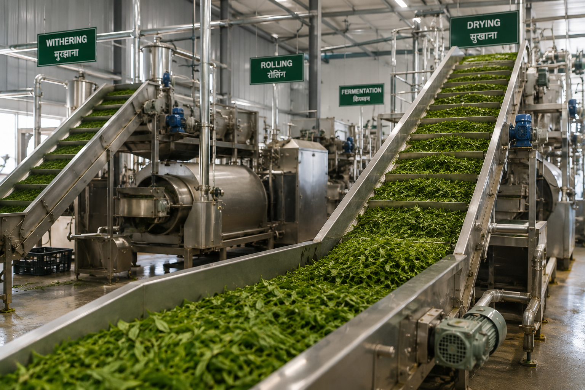
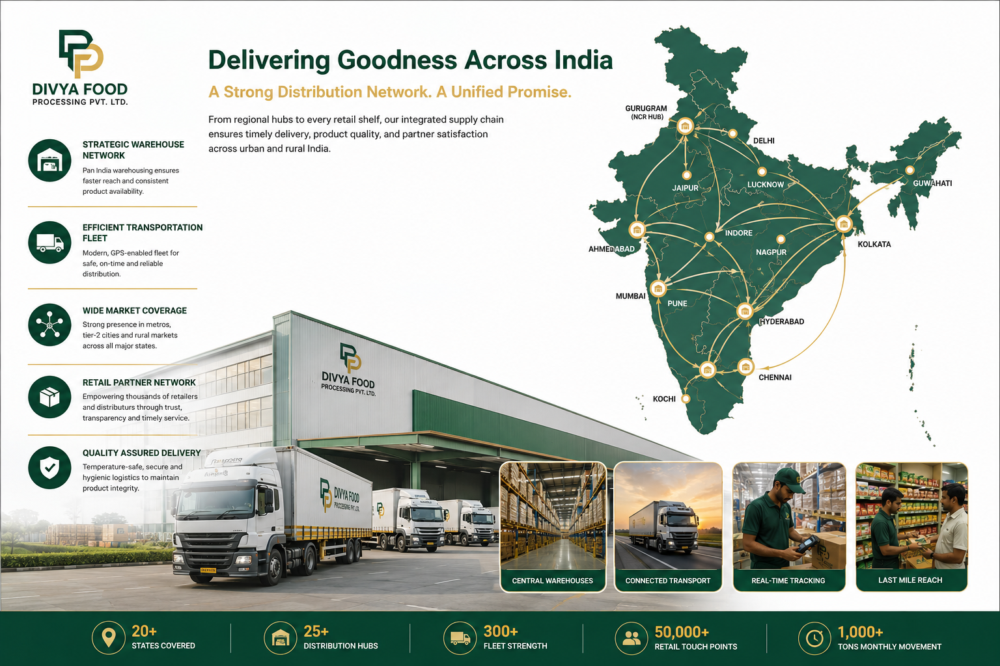
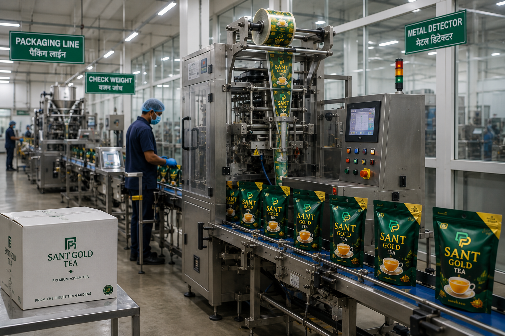

Quality & Operations
Building Foundations for Quality, Consistency and Scalable Growth
Divya Food Processing Private Limited is evaluating manufacturing, quality assurance, supply chain, and operational frameworks intended to support future growth across food processing and FMCG categories.
Our Operational Philosophy
The company believes that long-term success in food processing and consumer products requires a strong foundation built upon quality, consistency, traceability, compliance, and operational discipline.
As part of its development process, the company is evaluating operational models, manufacturing pathways, supplier relationships, and quality management systems that align with future business objectives.

Quality-First Mindset
Quality is expected to remain a central consideration across future sourcing, processing, packaging, and product development activities.
The company intends to pursue business practices designed to support product consistency, customer confidence, and long-term brand value.

Processing Frameworks Under Evaluation
The company is assessing various approaches to food processing, production planning, operational execution, and supply-chain integration.
Future operational models may involve strategic partnerships, third-party manufacturing relationships, contract production arrangements, dedicated facilities, or a combination of these approaches.

Supply Chain Development
Reliable sourcing and supply-chain management are essential components of a sustainable FMCG business.
Divya Food Processing is exploring supplier relationships, sourcing opportunities, and operational partnerships intended to support future business activities.

Packaging & Product Presentation
Packaging serves both functional and brand-building objectives.
Future packaging strategies are expected to emphasize product integrity, consumer convenience, visual differentiation, and commercial practicality.
Compliance & Regulatory Considerations
The company recognizes the importance of complying with applicable laws, regulations, standards, and industry requirements relevant to future operations.
Any future manufacturing, processing, packaging, distribution, or commercial activities would be undertaken subject to applicable regulatory requirements and business considerations.

Future Infrastructure Vision
As part of its long-term growth strategy, the company may evaluate opportunities relating to operational infrastructure, manufacturing capabilities, logistics systems, and value-added processing activities.
Such opportunities remain subject to future business decisions, market conditions, capital availability, partnership opportunities, and regulatory considerations.
A Scalable Approach to Operations
Rather than prioritizing rapid expansion, the company intends to focus on building sustainable systems capable of supporting long-term growth.
This approach seeks to balance operational discipline, quality considerations, business flexibility, and future scalability.
Illustrative Visual Content
Images, renderings, conceptual representations, diagrams, and visual materials displayed on this page are intended solely for illustration, communication, and presentation purposes.
Such visuals should not be interpreted as representations of existing facilities, production infrastructure, manufacturing operations, quality systems, equipment, partnerships, certifications, or future outcomes.
Forward-Looking Information
Certain statements on this page describe strategic objectives, development priorities, operational concepts, and future business aspirations.
These statements involve assumptions, expectations, and planning considerations that may change over time.
Actual activities, capabilities, infrastructure, partnerships, and business outcomes may differ.